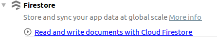
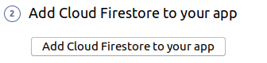
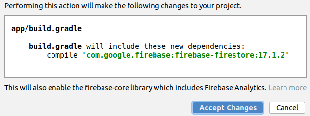
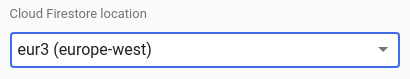
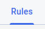
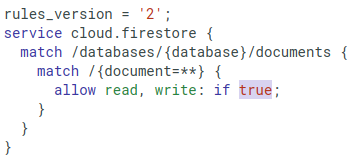
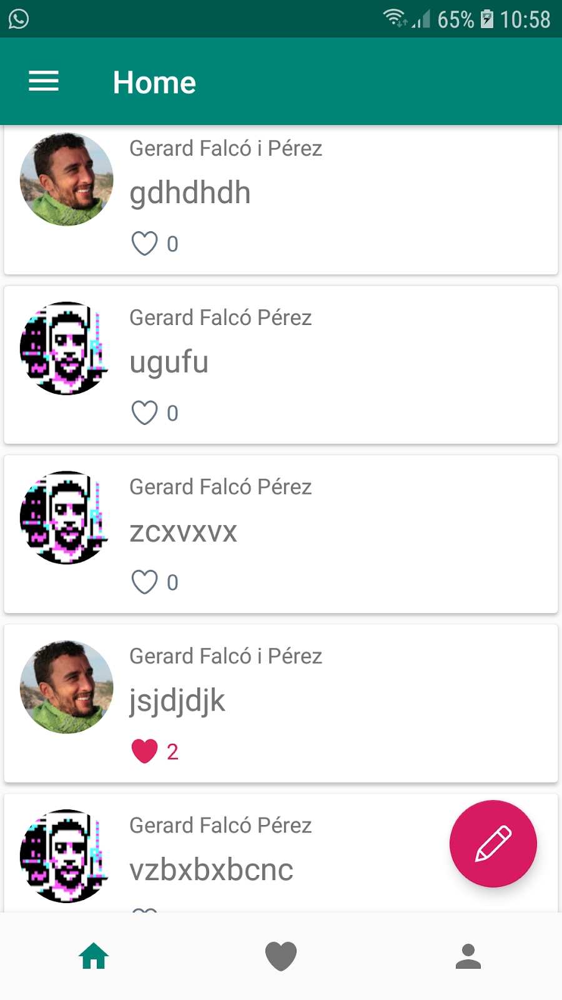
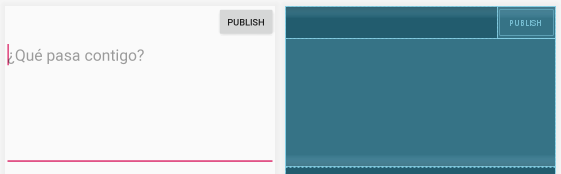
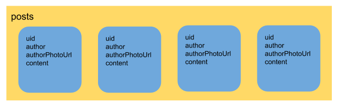
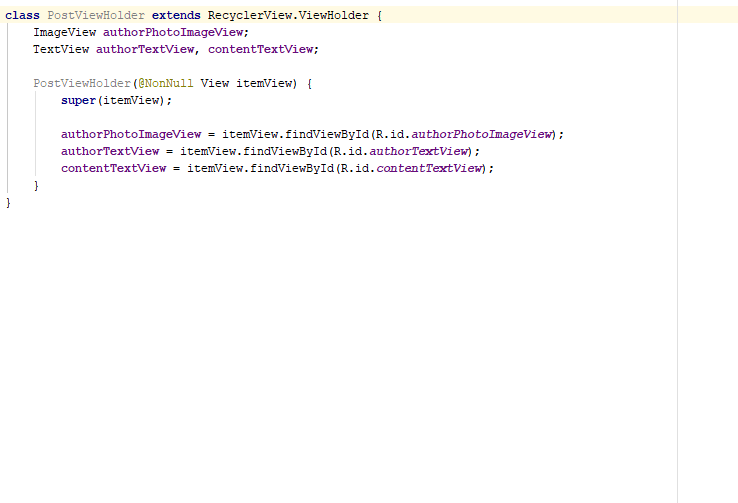

2. Crea el proyecto
Partiremos del proyecto de la práctica anterior (Firebase Auth).
Añade la base de datos Firestore
- Selecciona "Firestore" en el Assistente y haz clic en "Read and write documents with Cloud Firestore"
 - Haz clic en "Add Cloud Firestore to your app"

Haz clic en "Accept Changes"

- Ve a la Consola de Firebase: https://console.firebase.google.com
- Ve al apartado "Database"
- Haz clic en "Create database"
- Selecciona "Start in production mode"
- Selecciona "eur3 (europe-west)"
 - Ve a la pestaña "Rules"
 - Cambia a
true el permiso de escritura

Publica los cambios en las reglas
Desactiva la cache
El SDK de Firestore para Android tiene activada por defecto la persistencia de datos. Esto significa que cuando hacemos una consulta al servidor, se guarda el resultado en el móvil (cache). Esto va muy bien para ahorrar uso de datos, pero nos puede dar algun quebradero de cabeza durante el desarrollo de la app.
En el método onCreate() de la MainActivity añade el siguiente código:
FirebaseFirestore.getInstance().setFirestoreSettings(new FirebaseFirestoreSettings.Builder() .setPersistenceEnabled(false) .build());
Añade el siguiente pack de iconos
Descomprime el zip y arrastra los iconos a la carpeta
3. Diseño de la UI
Utilizaremos dos destinaciones: HomeFragment y NewPostFragment
HomeFragment
La destinación HomeFragment es la que mostrará la lista de Posts en un

<?xml version="1.0" encoding="utf-8"?> <FrameLayout xmlns:android="http://schemas.android.com/apk/res/android" xmlns:tools="http://schemas.android.com/tools" android:layout_width="match_parent" android:layout_height="match_parent" xmlns:app="http://schemas.android.com/apk/res-auto" tools:context=".HomeFragment"> <androidx.recyclerview.widget.RecyclerView android:id="@+id/postsRecyclerView" android:layout_width="match_parent" android:layout_height="wrap_content" app:layoutManager="androidx.recyclerview.widget.LinearLayoutManager"/> <com.google.android.material.floatingactionbutton.FloatingActionButton android:id="@+id/gotoNewPostFragmentButton" android:layout_width="wrap_content" android:layout_height="wrap_content" android:layout_gravity="bottom|end" android:layout_margin="@dimen/fab_margin" app:srcCompat="@drawable/pen" /> </FrameLayout>
<?xml version="1.0" encoding="utf-8"?> <androidx.cardview.widget.CardView xmlns:android="http://schemas.android.com/apk/res/android" xmlns:app="http://schemas.android.com/apk/res-auto" android:layout_width="match_parent" android:layout_height="wrap_content" app:cardUseCompatPadding="true"> <LinearLayout android:orientation="horizontal" android:layout_width="match_parent" android:layout_height="wrap_content" android:padding="10dp"> <ImageView android:id="@+id/photoImageView" android:layout_width="60dp" android:layout_height="wrap_content" android:adjustViewBounds="true" app:srcCompat="@drawable/user" /> <LinearLayout android:layout_width="wrap_content" android:layout_height="wrap_content" android:orientation="vertical" android:paddingStart="10dp"> <TextView android:id="@+id/authorTextView" style="@style/Base.TextAppearance.AppCompat.Small" android:layout_width="wrap_content" android:layout_height="wrap_content" android:gravity="center_vertical" android:text="Author"/> <TextView android:id="@+id/contentTextView" android:textSize="20sp" android:layout_width="wrap_content" android:layout_height="wrap_content" android:layout_marginTop="5dp" android:text="Contenido"/> <LinearLayout android:id="@+id/likeLinearLayout" android:layout_marginTop="10dp" android:layout_width="wrap_content" android:layout_height="wrap_content" android:orientation="horizontal"> <ImageView android:id="@+id/likeImageView" app:srcCompat="@drawable/like_on" android:adjustViewBounds="true" android:layout_width="20dp" android:layout_height="wrap_content" android:layout_gravity="center_vertical"/> <TextView android:id="@+id/numLikesTextView" android:layout_width="wrap_content" android:layout_height="wrap_content" android:layout_marginStart="4dp" android:layout_gravity="center_vertical" android:text="200K"/> </LinearLayout> </LinearLayout> </LinearLayout> </androidx.cardview.widget.CardView>
NewPostFragment
Crea la destinación NewPostFragment en
Esta destinación será sencilla (de momento...): un TextView y un Botón

<?xml version="1.0" encoding="utf-8"?> <FrameLayout xmlns:android="http://schemas.android.com/apk/res/android" xmlns:tools="http://schemas.android.com/tools" android:layout_width="match_parent" android:layout_height="match_parent" tools:context="NewPostFragment"> <LinearLayout android:layout_width="match_parent" android:layout_height="wrap_content" android:orientation="vertical"> <Button android:id="@+id/publishButton" android:layout_width="wrap_content" android:layout_height="wrap_content" android:text="Publish" android:layout_gravity="end"/> <EditText android:id="@+id/postContentEditText" android:layout_width="match_parent" android:layout_height="wrap_content" android:hint="¿Qué pasa contigo?" android:textSize="24sp" android:lines="6" android:gravity="top|left"> <requestFocus /> </EditText> </LinearLayout> </FrameLayout>
4. Publicar nuevos posts
Empezaremos con la funcionalidad de añadir nuevos posts (ya que hasta que no se puedan añadir posts no los podremos mostrar en el HomeFragment).
Lo primero será activar el
public class HomeFragment extends Fragment { private NavController navController; // ... @Override public void onViewCreated(@NonNull View view, @Nullable Bundle savedInstanceState) { super.onViewCreated(view, savedInstanceState); navController = Navigation.findNavController(view); view.findViewById(R.id.gotoNewPostFragmentButton).setOnClickListener(new View.OnClickListener() { @Override public void onClick(View v) { navController.navigate(R.id.newPostFragment); } }); } }
Una vez ya en el NewPostFragment, empezaremos con los
public class NewPostFragment extends Fragment { Button publishButton; EditText postConentEditText; // ... @Override public void onViewCreated(@NonNull View view, @Nullable Bundle savedInstanceState) { super.onViewCreated(view, savedInstanceState); publishButton = view.findViewById(R.id.publishButton); postConentEditText = view.findViewById(R.id.postContentEditText); publishButton.setOnClickListener(new View.OnClickListener() { @Override public void onClick(View view) { publicar(); } }); } private void publicar() { } }
Guardar el Post en Firestore

Crearemos una colección llamada
El primer paso será crear la clase
public class Post { public String uid; public String author; public String authorPhotoUrl; public String content; // Constructor vacio requerido por Firestore public Post() {} public Post(String uid, String author, String authorPhotoUrl, String content) { this.uid = uid; this.author = author; this.authorPhotoUrl = authorPhotoUrl; this.content = content; } }
En el método
private void publicar() { String postContent = postConentEditText.getText().toString(); if(TextUtils.isEmpty(postContent)){ postConentEditText.setError("Required"); return; } publishButton.setEnabled(false); guardarEnFirestore(postContent); }
El método
private void guardarEnFirestore(String postContent) { FirebaseUser user = FirebaseAuth.getInstance().getCurrentUser(); Post post = new Post(user.getUid(), user.getDisplayName(), user.getPhotoUrl().toString(), postContent); FirebaseFirestore.getInstance().collection("posts") .add(post) .addOnSuccessListener(new OnSuccessListener<DocumentReference>() { @Override public void onSuccess(DocumentReference documentReference) { navController.popBackStack(); } }); }
5. Mostrar la lista de posts
El último paso será mostrar la colección de posts en un RecyclerView. Para ello, usaremos el Adaptador de la librería FirebaseUI. Añade la siguiente dependencia:
implementation 'com.firebaseui:firebase-ui-firestore:6.2.0'
Comprueba también que tienes la dependencia Glide, ya que la necesitaremos para mostrar las fotos de los usuarios:
implementation 'com.github.bumptech.glide:glide:4.11.0' annotationProcessor 'com.github.bumptech.glide:compiler:4.11.0'
Clase PostViewHolder
Hacer los
class PostViewHolder extends RecyclerView.ViewHolder{ ImageView authorPhotoImageView; TextView authorTextView, contentTextView; PostViewHolder(@NonNull View itemView) { super(itemView); authorPhotoImageView = itemView.findViewById(R.id.authorPhotoImageView); authorTextView = itemView.findViewById(R.id.authorTextView); contentTextView = itemView.findViewById(R.id.contentTextView); } }
Clase PostsAdapter
Haremos uso de la clase
El primer genérico es la clase de objetos correspondiente a los documentos que se van a mostrar, es decir, la clase

En el método
En el método
El código de la clase PostAdapter (y PostViewHolder) queda finalmente así:
class PostsAdapter extends FirestoreRecyclerAdapter<Post, PostsAdapter.PostViewHolder> { public PostsAdapter(@NonNull FirestoreRecyclerOptions<Post> options) {super(options);} @NonNull @Override public PostViewHolder onCreateViewHolder(@NonNull ViewGroup parent, int viewType) { return new PostViewHolder(LayoutInflater.from(parent.getContext()).inflate(R.layout.viewholder_post, parent, false)); } @Override protected void onBindViewHolder(@NonNull PostViewHolder holder, int position, @NonNull final Post post) { Glide.with(getContext()).load(post.authorPhotoUrl).circleCrop().into(holder.authorPhotoImageView); holder.authorTextView.setText(post.author); holder.contentTextView.setText(post.content); } class PostViewHolder extends RecyclerView.ViewHolder { ImageView authorPhotoImageView; TextView authorTextView, contentTextView; PostViewHolder(@NonNull View itemView) { super(itemView); authorPhotoImageView = itemView.findViewById(R.id.authorPhotoImageView); authorTextView = itemView.findViewById(R.id.authorTextView); contentTextView = itemView.findViewById(R.id.contentTextView); } } }
Establecer el Adaptador en el RecyclerView
Ya solo queda crear el objeto
Habrás notado que en el constructor del
La forma de hacerlo es la siguiente:
public class HomeFragment extends Fragment { // ... @Override public void onViewCreated(@NonNull View view, @Nullable Bundle savedInstanceState) { // ... RecyclerView postsRecyclerView = view.findViewById(R.id.postsRecyclerView); Query query = FirebaseFirestore.getInstance().collection("posts").limit(50); FirestoreRecyclerOptions<Post> options = new FirestoreRecyclerOptions.Builder<Post>() .setQuery(query, Post.class) .setLifecycleOwner(this) .build(); postsRecyclerView.setAdapter(new PostsAdapter(options)); } // class PostsAdapter extends FirestoreRecyclerAdapter ... }
6. Gestión de Likes
// TODO: